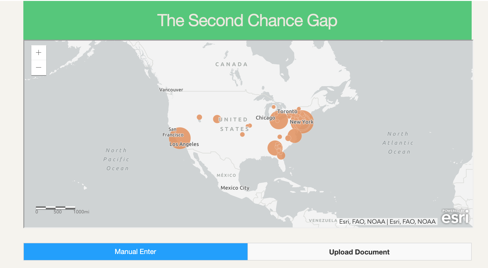

These are some things that I've worked on.
Second Chance Gap

Worked with SCU law faculty on a project to assist people with past criminal records on expunging their criminal records.
Vivify Vivid
Designed and implemented a desktop application to test and interact with Vivify's color changing HDMI cable
Social Media Growth Platform
Built a automatic platform that provides the SCU University Marketing and Communications team with up to date data and analytics of SCU and its competitors social media accounts.